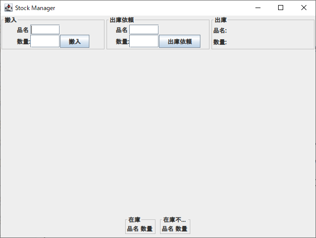

「StockManagement」は，ソフトウェア工学分野において共通問題として用いられる酒屋の在庫問題を一部簡略化し，
Javaを用いて実装したGUIアプリケーションです．
StockManagementでは，ある酒屋の倉庫に対するお酒の搬入処理と，出庫依頼を行うことができます．
お酒の在庫は，品名と数量で管理されます．StockManagementを起動するとどのお酒の在庫もない状態から始まります．
お酒の在庫の状態は画面下部左側に表形式で表示されています．
倉庫にコンテナの搬入があった場合は，画面上部左側にコンテナ内のお酒の品名と数量を入力します．
受付係が出庫依頼を受けた場合は，画面上部中央に依頼されたお酒の品名と数量を入力します．

以下，搬入処理と出庫依頼処理のそれぞれについて説明します．